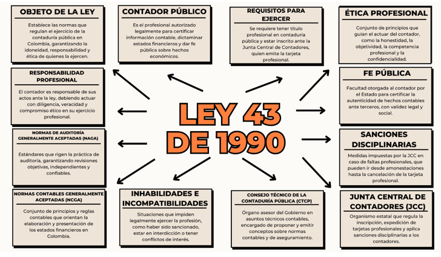

Cuadro comparativo de la fase 1.
| Criterio | Ética | Moral | Ética Académica | Ética Profesional | Competencias Profesionales |
|---|---|---|---|---|---|
| Definición | Conjunto de principios filosóficos que rigen el comportamiento humano. | Conjunto de normas, valores y costumbres aprendidas desde la sociedad. | Conjunto de normas y principios que regulan el comportamiento dentro del ámbito académico. | Conjunto de principios que orientan la conducta del profesional en su ejercicio laboral. | Conjunto de habilidades, conocimientos y actitudes necesarias para un desempeño profesional óptimo. |
| Objetivo | Guiar la conducta humana hacia el bien común. | Mantener la cohesión y armonía social a través de normas compartidas. | Fomentar la honestidad, responsabilidad y respeto en los procesos de aprendizaje. | Garantizar un actuar honesto, responsable y transparente en el ejercicio de la profesión. | Asegurar el desempeño eficiente, ético y actualizado del profesional. |
| Diferencias | Es universal y reflexiva; analiza el porqué de las acciones. | Es más práctica y cultural; varía según el entorno y la sociedad. | Se aplica exclusivamente al entorno académico. | Se aplica dentro del contexto laboral y profesional. | No es un conjunto de valores, sino de capacidades técnicas y personales. |
| Relación con el Contador Público | Le permite tomar decisiones justas, más allá de lo legal. | Influye en sus juicios personales y en su forma de actuar socialmente. | Regula su conducta como estudiante de contaduría, fomentando la honestidad académica. | Determina su actuar correcto frente a clientes, entidades y colegas. | Define su idoneidad para ejercer la profesión de manera eficaz y ética. |
| Ejemplo | Un contador decide no manipular cifras porque va en contra del bien común. | Se niega a realizar una acción fraudulenta por sus valores familiares. | No copia en un examen ni comete plagio en trabajos universitarios. | No acepta sobornos ni participa en prácticas corruptas. | Conoce la normativa contable vigente y aplica habilidades tecnológicas para su trabajo. |
Mapa mental y cuadro comparativo de la fase 2.
| Aspecto | Ley 43 de 1990 | Código de Ética de la IFAC |
|---|---|---|
| Ámbito de Aplicación | Se aplica a todos los profesionales en contaduría pública que ejercen dentro del territorio colombiano. | Tiene alcance global para contadores afiliados a organizaciones miembros de la IFAC. |
| Objetivo | Establecer los lineamientos legales y éticos que rigen la actividad contable en Colombia. | Proporcionar un marco de referencia ético unificado para los contadores a nivel internacional. |
| Principios |
- Honestidad - Imparcialidad - Responsabilidad técnica - Secreto profesional - Cumplimiento normativo |
- Honestidad - Imparcialidad - Competencia y cuidado profesional - Discreción - Conducta adecuada |
| Finalidad | Velar por la transparencia, calidad y credibilidad de la información contable en el contexto colombiano. | Fomentar el comportamiento ético y la confianza del público en la labor del contador globalmente. |
Ensayo y cuadro comparativo de la fase 3
Introducción
En el entorno económico actual, caracterizado por una alta competitividad, constantes cambios normativos y la necesidad de información financiera precisa, el contador público ha adquirido un papel fundamental. Su intervención no solo se limita al registro contable, sino que abarca áreas estratégicas de la empresa como la toma de decisiones, el control interno, el cumplimiento fiscal y la consultoría. Este ensayo tiene como propósito argumentar la relevancia del rol del contador en los ámbitos empresarial, financiero y de consultoría, resaltando su valor como profesional ético, analítico y asesor clave dentro de las organizaciones.
1. Ámbito empresarial
En el contexto empresarial, el contador contribuye al diseño, implementación y evaluación de sistemas contables eficientes que permiten a las organizaciones operar con transparencia y control. Participa en la planeación estratégica, el análisis de costos, la elaboración de presupuestos y el seguimiento de indicadores de desempeño. Su rol es clave para asegurar el uso eficiente de los recursos y la sostenibilidad a largo plazo. Asimismo, facilita la toma de decisiones basadas en datos reales y verificables.
2. Ámbito financiero
Desde la perspectiva financiera, el contador es responsable de generar y analizar estados financieros confiables y oportunos. Estos documentos son esenciales para evaluar la salud financiera de una empresa, gestionar riesgos, atraer inversionistas y cumplir con entidades reguladoras. Además, el contador público asesora en temas como financiamiento, inversiones, planeación tributaria y cumplimiento de normas internacionales como las NIIF, garantizando la transparencia y la rendición de cuentas.
3. Ámbito de consultoría
En su función como consultor, el contador se convierte en un asesor estratégico que aporta conocimientos técnicos y una visión integral del negocio. Brinda recomendaciones en procesos de reestructuración, optimización fiscal, implementación de software contable y mejora de procesos administrativos. Gracias a su formación integral y su capacidad de análisis, puede identificar áreas de mejora, proponer soluciones y acompañar en su ejecución, agregando valor al cliente y fortaleciendo la gestión empresarial.
Conclusión
El contador público ha trascendido el papel tradicional de registrador de sucesos económicos para posicionarse como un actor clave en la dirección estratégica de las organizaciones. Su labor en los ámbitos empresarial, financiero y de consultoría contribuye a la eficiencia operativa, la transparencia financiera y el cumplimiento normativo. Por ello, es indispensable que el contador se mantenga actualizado, ético y comprometido con la mejora continua, ya que su intervención impacta de manera directa en la sostenibilidad y éxito de las empresas.
| Aspecto | NIA 230: Documentación de auditoría | NIA 240: Responsabilidad del auditor frente al fraude | NIA 260: Comunicación con los responsables del gobierno |
|---|---|---|---|
| Concepto | Establece las normas sobre cómo debe documentarse el trabajo del auditor. | Define la responsabilidad del auditor para identificar y responder al fraude. | Regula la comunicación efectiva entre el auditor y los responsables del gobierno de la entidad. |
| Características | - Debe ser clara, completa y oportuna. - Permite que otro auditor comprenda el trabajo. - Sirve como evidencia de la auditoría. |
- Reconoce que el fraude puede tener un efecto material. - Implica escepticismo profesional. - Requiere procedimientos adicionales. |
- Comunicación oportuna, clara y relevante. - Incluye temas significativos. - Debe ser bidireccional. |
| Diferencias | Se enfoca en cómo se documenta el trabajo. | Se enfoca en la detección y tratamiento del fraude. | Se enfoca en la interacción y reporte con la administración y gobierno. |
| Finalidad | Proporcionar un registro suficiente y adecuado que respalde el informe del auditor. | Prevenir, detectar y responder al fraude en los estados financieros. | Facilitar una comunicación clara para mejorar la auditoría y la gobernanza. |
| Ejemplo | Archivar papeles de trabajo que muestren cómo se evaluaron los riesgos. | Investigar discrepancias sospechosas en cuentas por cobrar. | Comunicar a la junta directiva los hallazgos sobre debilidades en control interno. |
• Historieta y opinión de la fase 4.